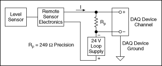
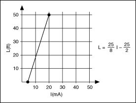
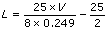

Many measurement devices can measure and generate current. To measure or generate current with a DAQ device, you need a resistor. Current then can be measured through an analog input connector or generated through an analog output connector. The resistance must be placed in parallel with the connector and the current source. To measure voltage dropped across the resistor and convert it to current, use Ohm's Law.
I(A) = V(V)/ R(Ω)
where I is the current, V is the voltage, and R is the resistance.
4 to 20 mA Loops
4 to 20 milliamp (4-20 mA) loops are commonly used in measurement systems. 4-20 mA loops couple a dynamic range with a live zero of 4 mA for open circuit detection in a system that does not produce sparks. Other advantages include a variety of compatible hardware, a long operating range, and low cost. 4-20 mA loops have a variety of uses, including digital communications, control applications, and reading remote sensors.
The purpose of the 4-20 mA current loop is for the sensor to transmit a signal in the form of a current. In the following illustration, the Level Sensor and Remote Sensor Electronics are typically built into a single unit. An external 24 VDC supply powers the sensor. The sensor regulates the current, which represents the value of what the sensor measures, in this case, the fluid level in a tank.

Current Loop Wiring
The DAQ device reads the voltage drop across the 249 Ω resistor Rp, using Ohm's Law.
Because the current is 4-20 mA and Rp is 249 Ω, V ranges from 0.996 V to 4.98 V, which is within the range that DAQ devices can read. Although the equation is useful for calculating the current, the current typically represents a physical quantity you want to measure. In the following illustration, the tank level measures 0 to 50 feet. 4 mA represents 0 feet, and 20 mA represents 50 feet. L is the tank level, and I is the current.

Linear Relationship between Tank Level and Current
Using the Ohm's Law equation and substituting 0.249 for the value of Rp, you can derive L in terms of measured voltage:

Examples
Refer to the following VIs for examples of performing this measurement. You must have a driver installed to find examples for that driver.
NI-DAQmx
You can use the DAQmx - Data Acquisition VIs to perform this measurement. Find related examples:
�Current - SW-Timed Input
�Current - On Demand Output
You also can use the DAQ Assistant Express VI to perform this measurement.
�Add�
�Find
NI-DMM
You can use the NI-DMM VIs to perform this measurement. Find related examples:
�Measuring Current
�Generating Current
FieldPoint
You can use the FieldPoint VIs to perform this measurement. Find related examples:
 �Current - SW-Timed Input
�Current - SW-Timed Input �Add�
�Add�